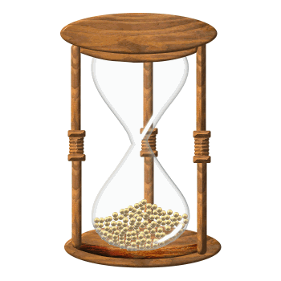

<div>
  <div data-dojo-attach-point="tabSearch">
    <div class="search-tab-node-hidden" data-dojo-attach-point="tabNodeSelect">
       <div>


            <select class="select-layer-spatial" style="display: none;"
                   data-dojo-attach-point="selectLayerSpatial" data-dojo-type="dijit/form/Select"></select>

            <select class="esearch-select-attrib" style="display: none;margin-bottom:10px;float:left;"
                    data-dojo-attach-point="selectLayerAttribute" data-dojo-type="dijit/form/Select"></select>

      		<div id="user_options">
      			<!-- toggle on/off to allow selecting to show all HUC12s, or HUC8s and just
      			     a subset of HUC12s - upto the bottom of the first HUC8  -->
                <!--
				<div style="padding-top: 10px; font-size: 14px; " >
					<input id="showAllHUC12" name='show_all_huc12_bool' type='checkbox' />Show all navigated HUC12s
				</div>
                -->
<!--?<div class="popup-menu-button esearch-result-action-button" data-dojo-attach-event="click:_onConfirmationBtnMenuClicked" data-dojo-attach-point="divOptions" title="ResultsAction" ></div>-->
                <div style="display: flex; padding: 3px;margin-top:-15px;">
                    <div data-dojo-attach-point="drawBox" data-dojo-type="jimu/dijit/DrawBox"
                         data-dojo-props="types:['point','polyline','polygon'],showClear:false"
                        style="width:20%; margin-left:13px;">
                    </div>
                    <div data-dojo-attach-point="divNavigationDirection" style="padding-top: 10px; font-size: 12px;" >Navigation direction
                        <input name='navigation_direction' value='Upstream' ng-model='mValue' type='radio'   checked="checked" />Upstream/
                        <input name='navigation_direction' value='Downstream' ng-model='mValue' type='radio'   />Downstream
                    </div>
                    <!-- toggle on/off to allow selecting the source of the HUC12 layer -->
                    <!--
                    <div id="selectHUC12MapServer" style="padding-top: 10px; font-size: 14px;" >Select HUC12 Map Server
                        <input name='huc12_mapserver' value='EnviroAtlas' ng-model='mValue' type='radio' checked="checked" />EnviroAtlas or
                        <input name='huc12_mapserver' value='WatersGEO' ng-model='mValue' type='radio' />WatersGEO
                    </div>
                     -->
                </div>
<!--?                <a class="button-clear-graphical" href="#" data-dojo-attach-point="btnClear2">${nls.clear}</a>-->
                <!-- these are just not used, but leave them -->
<!--?                <div style="clear:both;margin-bottom:8px;" data-dojo-attach-point="multiGraDiv">-->
<!--?                    <div data-dojo-type="jimu/dijit/CheckBox" data-dojo-attach-point="cbxMultiGraphic" data-dojo-props="label:'${nls.useMultiGraphics}'" style="margin-top: 8px;">-->

<!--?                    </div>-->
<!--?                    <div data-dojo-attach-point="btnGraSearch" data-dojo-attach-event="onclick:_onBtnGraSearchClicked" class="search-btn btn-grasearch">${nls.search}</div>-->
<!--?                </div>-->
<!--?                <div style="padding-bottom:8px;" data-dojo-attach-point="addToleranceDiv">-->
<!--?                    <div data-dojo-type="jimu/dijit/CheckBox" data-dojo-attach-point="cbxAddTolerance" data-dojo-props="label:'${nls.addTolerance}'">-->

<!--?                    </div>-->
<!--?                </div>-->
<!--?                <div data-dojo-attach-point="addSqlTextDiv">-->
<!--?                <div data-dojo-type="jimu/dijit/CheckBox" data-dojo-attach-point="cbxAddTextQuery" data-dojo-props="checked: false,label:'${nls.addTextQuery}'">-->

<!--?                </div>-->
<!--?                </div>-->
<!--?                <div style="white-space: nowrap;" data-dojo-attach-point="bufferGraDiv">-->
<!--?                    <div data-dojo-type="jimu/dijit/CheckBox" data-dojo-attach-point="cbxBufferGraphic" data-dojo-props="label:'${nls.bufferGraphic}'" style="margin-top: 8px;">-->

<!--?                    </div>-->
<!--?                    <input type="text" data-dojo-type="dijit/form/NumberTextBox" data-dojo-attach-point="txtBufferValue"-->
<!--?                           data-dojo-props="required:true,intermediateChanges:true"-->
<!--?                           style="width:50px;padding-right:5px;margin-top:-8px;" />-->
<!--?                    <select style="width:120px;padding-right:5px;margin-top:-8px;" data-dojo-attach-point="bufferUnits" data-dojo-type="dijit/form/Select"></select>-->
<!--?                    <a style="float:right; margin-right:10px" href="#" data-dojo-attach-point="btnClearBuffer2">${nls.clearBuffer}</a>-->
<!--?                </div>-->
                <!-- END these are just not used, but leave them -->

                <div data-dojo-attach-point="divNavigationMessages" style="font-size: 16px;"></div>
                <div data-dojo-attach-point="progressbar"></div>
                <div id="grids" >

                    <div id="gridHUC12"></div>

                    <p></p>
                    <div id="gridNavResults"></div>
                </div>
                <div id="footer"></div>
			</div>

        <label class="esearch-label hidden" style="display: none; margin-bottom:10px;float:left;line-height:30px;"
               data-dojo-attach-point="labelLayerGraphical"></label>
        <select class="esearch-select-graphic" style="display: none; margin-bottom:10px;float:left;"
                data-dojo-attach-point="selectLayerGraphical"
                data-dojo-type="dijit/form/Select"></select>

      </div>
      <br>
      <!--<label>${nls.selectFeaturesBy}</label> 
      <br>-->

    </div>
    <div class="search-tab-node-hidden" data-dojo-attach-point="tabNodeAggregate">
      <div>
        <label>Aggregate Indicators</label>
        <div style="display: none;">
            <div style="display: inline-block;">
                <input id = "show_all_huc12" type="checkbox" name="terms" checked />Show all navigated HUC12s
            </div>
        </div>
        <br style="display: none;">
        <div id="NavigateErrorMessage" style="display: none;"></div>
        <label style="FOOdisplay: none;">Subwatershed HUC12:
            <input type="text" data-dojo-attach-point="divNavigationHUCode" value="" maxlength="12"
                   onkeypress="return chkNumeric(event)" style="margin-left: 5px; font-size: 11px; font-weight: lighter;width: 100px;"/>
            <button type="submit" class="btn btn-primary" id="navigateViaText" style="padding: 2px;" disabled
                    >Navigate</button><br>
        </label>

        <br>
        <!-- onChange this selection filters and replaces the values in the drop down list below-->
        <label for="attribute_selector" style="margin-top: 5px; margin-bottom: 0px; font-weight: lighter; display: inline-block" >Select Indicator Category:</label>
        <div id="indicatorDiv" style="display: block;" >

            <div id="category_selector" style="display: inline-block; font-size: 11px; overflow: hidden;">
                <select data-dojo-attach-point="divCategorySelect">
                    <option value="NONE">--- Select ---</option>
                    <option value="Carbon Storage">Carbon Storage</option>
                    <option value="Crop Productivity">Crop Productivity</option>
                    <option value="Energy Potential">Energy Potential</option>
                    <option value="Engagement with Outdoors">Engagement with Outdoors</option>
                    <option value="Geography">Geography</option>
                    <option value="Impaired Waters">Impaired Waters</option>
                    <option value="Land Cover: Near-Water">Land Cover: Near-Water</option>
                    <option value="Land Cover: Type">Land Cover: Type</option>
                    <option value="Landscape Pattern">Landscape Pattern</option>
                    <option value="Near-Road Environments">Near-Road Environments</option>
                    <option value="Pollutant Reduction: Water">Pollutant Reduction: Water</option>
                    <option value="Pollutants: Nutrients">Pollutants: Nutrients</option>
                    <option value="Population Distribution">Population Distribution</option>
                    <option value="Protected Lands">Protected Lands</option>
                    <option value="Species: At-Risk and Priority">Species: At-Risk and Priority</option>
                    <option value="Species: Other">Species: Other</option>
                    <option value="Water Supply, Runoff, and Flow">Water Supply, Runoff, and Flow</option>
                    <option value="Water Use">Water Use</option>
                    <option value="Weather and Climate">Weather and Climate</option>
                    <option value="Wetlands and Lowlands">Wetlands and Lowlands</option>
                </select>
            </div>
            <button type="submit" class="btn btn-primary" data-dojo-attach-point="divRecomputeAggregate" disabled
                    >Recompute Aggregate</button><br>
        </div>
        <!-- this is the value used to make the query -->
        <label for="attribute_selector" style="margin-top: 5px; margin-bottom: 0px; font-weight: lighter;" >Select Specific Indicator to Aggregate:</label>
        <div id="attribute_selector" style="display: block; font-size: 11px; overflow: hidden;">
            <select data-dojo-attach-point="divAttributeSelect">
                <option value="NONE" selected="selected">-- Select Category First --</option>
            </select>
        </div>
        <p></p>
        <div id="gridAttributeResults"></div>

    </div>
    <div class="search-tab-node-hidden" data-dojo-attach-point="tabNodeDownloads">
      <div>
        <label>Downloads</label>
        <br>
        <div >
            <div id="download_metrics2016" style="display:none"></div>
            <div id="download_metrics2017" style="display:none"></div>
            <div id="download_geography" style="display:none"></div>
            <div id="download_attributes" style="display:none"></div>
            <div id="permalink" style="display:none"></div>
            <div id="api_upstream" style="display:none"></div>
            <div id="api_downstream" style="display:none"></div>
        </div>
    </div>
    <div class="search-tab-node-hidden" data-dojo-attach-point="tabNode4" style="overflow: hidden;">

      <div data-dojo-attach-point="divResultMessage" class="esearch-noResults"></div>
      <div class="popup-menu-button esearch-result-action-button" data-dojo-attach-event="click:_onBtnMenuClicked" data-dojo-attach-point="divOptions" title="${nls.resultactions}" style="display:none;"></div>
      <div data-dojo-attach-point="listDiv"></div>
      <div id="results"></div>
      <div data-dojo-attach-point="clickAgainMessage">Click on only one of the highlighted HUC-12 subwatersheds to navigate upstream.+</div>
      <div id="gridHUC12" data-dojo-attach-point="gridHUC12"></div>
      <br>
      <div id="gridNavResults" data-dojo-attach-point="gridNavResults"></div>
      <label data-dojo-attach-point="divSum" class="esearch-sum" style="display:none;"></label>
    </div>
  </div>
  
  
  <div data-dojo-type="jimu/dijit/LoadingShelter" data-dojo-attach-point="shelter" data-dojo-props="hidden:true" style="overflow:hidden;"></div>
</div>
